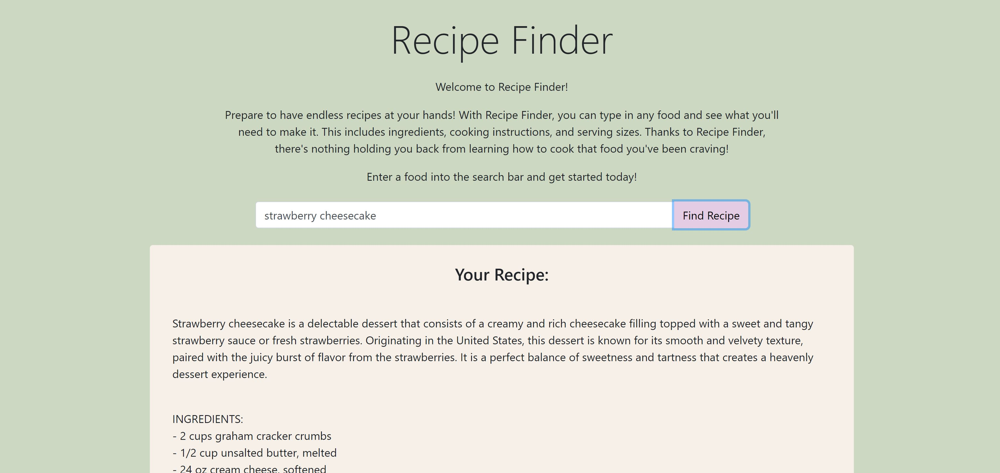
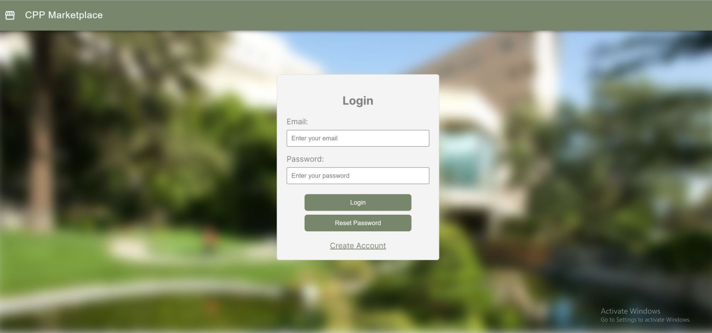

Welcome to my personal website!
My name is Samanyu Satheesh, and I'm an aspiring software engineer. As a recent graduate from Cal Poly Pomona, I'm passionate about developing new things and using technology to enrich our lives.
Born and raised in Mountain View, California, I grew up in a diverse community surrounded by some of the biggest names in tech. This exposure cultivated my interest in technology, with me pursuing fields such as robotics and coding. Following this path, I enrolled at Cal Poly Pomona, majoring in Computer Science. I graduated Summa Cum Laude in 2024, with a 3.9 GPA.
I currently work at DataAnnotation as an Artificial Intelligence Specialist, where I train cutting-edge Large Language Models by developing a wide range of test cases and prompting strategies. I evaluate and refine the model's responses, while composing detailed notes that allow the model to learn how to improve its performance. I additionally work part-time at CodePath as a Tech Fellow, where I instruct and facilitate learning environments for college students studying Computer Science.
In my free time, I love to play the drums, listen to a wide variety of music, and try new foods. I enjoy spending time with friends and family, as well as learning new things. I'm currently learning more about robotics and machine learning, and how we can use artificial intelligence alongside robotics to solve complex problems.
You can scroll down to see some of the projects I've worked on!
Recent Projects
Recipe Generator Website
I developed a Recipe Generator web application powered by OpenAI that allows the user to find the recipe for any food of their choice. Upon entering the name of a food into the search bar, the user is presented with a short summary of the dish, the ingredients required, the serving size, and step-by-step instructions detailing the preparation of the food.
I leveraged the OpenAI API to power this web application, using an integrated prompting approach to ensure a thorough response from the desired GPT. The LLM's response is parsed and formatted into specific sections before being sent to the user. I used Bootstrap to create a clean and responsive UI.
CPP Marketplace Web Application
I collaborated with fellow students to design and develop a campus marketplace website. Exclusively open to students at Cal Poly Pomona, users can create an account, log in, post items for sale, see open listings, and search for items using filters. We leveraged Next.js, React, TypeScript, and Material UI to provide for a dynamic and intuitive user experience. We additionally used Firebase for our backend, allowing us to store marketplace data in the cloud.
We developed the entire website in less than 24 hours at the Cal Poly Pomona 2024 BroncoHacks hackathon, and presented our service to a panel of industry professionals. I learned multiple technologies through this experience, while improving my teamwork and leadership as well.
UAV Machine Learning Fire Detection

I collaborated with others on the Lockheed Martin UAV Fire Detection Project at Cal Poly Pomona. As the Machine Learning Team Lead, I coordinated the ML team members and explored ways for us to collaborate and achieve our goal: our autonomous UAV being able to identify wildfires using machine learning. Using the YOLOv8 software, we were able to train a model to recognize fires with an accuracy rate of about 80%.
Through this experience, I practiced and built upon my teamwork, leadership, and communication skills, providing updates to the Project Lead in a timely manner. Additionally, I presented our team's progress, findings, and future plans to Lockheed Martin representatives.
Boston Dynamics SPOT Autonomous Package Delivery

I worked with a team of colleagues on a research project utilizing the Boston Dynamics SPOT robot to perform autonomous package deliveries. SPOT was programmed to identify a package, retrieve it, and navigate its way to a delivery destination using fiducial markers.
We developed our program in Python and leveraged the Boston Dynamics SDK to help bridge the gap between the software and hardware components of this robotics project. We presented our project at the College of Science Research Symposium as well as at an Open House showcase for new students.
Study Flashcards Mobile App

I created a fun and useful Android app for flashcard decks using Java and Android Studio. In the app, users can create, edit, and save their own flashcard sets. I updated and added features to the app over the course of four weeks, and used an Android emulator on my machine to run testcases and debug.
When quizzing themselves with the flashcards, users can either click on the card to flip it and reveal the result, or pick one of the three possible answers below. I imported libraries that allowed me to implement special effects, and added an icon for the app itself.
Contact Me
If you'd like to get in touch, feel free to reach out via email or connect with me on LinkedIn and GitHub using the links below.
- Email: samanyusatheesh02@gmail.com
- LinkedIn: https://www.linkedin.com/in/samanyu-satheesh/
- GitHub: https://github.com/Samanyu24X